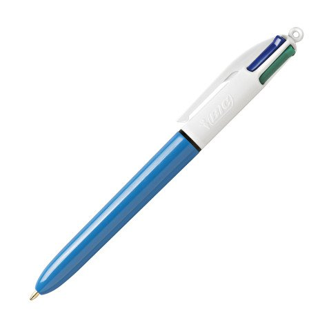

| Indispensable au quotidien, le stylo 4 couleurs Bic vous permet d’écrire, corriger et organiser vos notes sans changer d’outil. Il réunit 4 encres classiques (bleu, noir, rouge et vert) dans un seul stylo pratique et ergonomique. Son design iconique avec bouton-poussoir facilite le passage d’une couleur à l’autre en un clic. |  | 4$ |